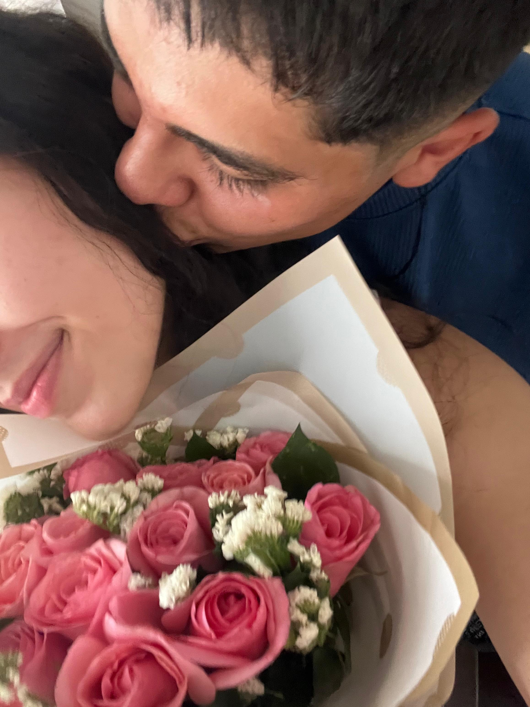
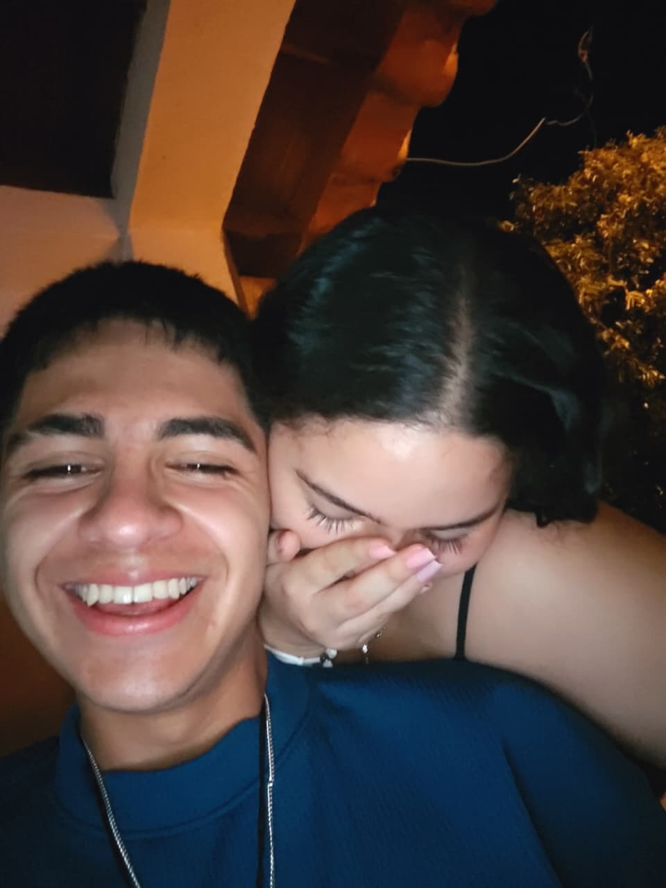
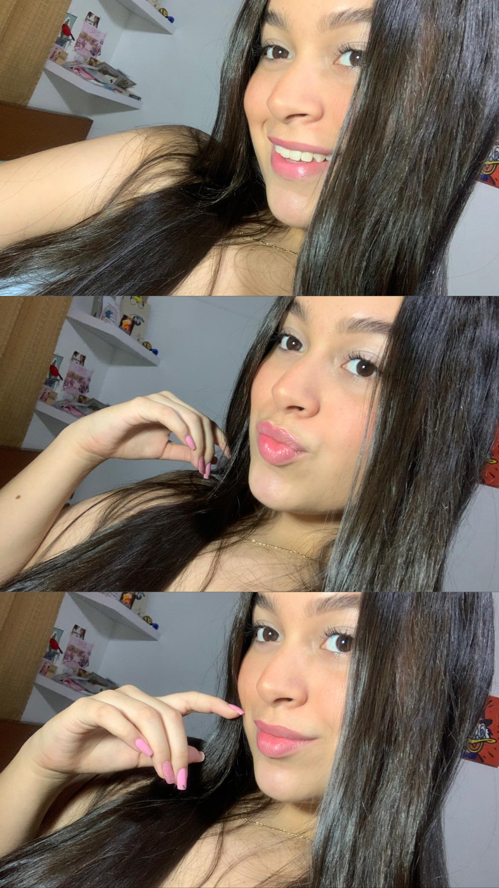

Felices 2 Meses, [Su Apodo Cariñoso]
He creado este pequeño rincón de nuestro mundo para ti.
Sube el volumen y déjate llevar por nuestros recuerdos...
Nuestro Tiempo Juntos en Números
60
Días de risas interminables
8
Semanas construyendo nuestra historia
∞
Motivos por los que te amo
Nuestros Primeros Recuerdos

Nuestra primera cita. ¡No podía dejar de sonreír!

Ese día que no paramos de reír.

Mi foto favorita de todas.
Cosas que He Amado de Nuestros Primeros 60 Días
- Despertar y ver tu mensaje de 'buenos días', sabiendo que soy tu primer pensamiento a pesar de los kilómetros.
- La forma en que se ilumina toda la pantalla cuando sonríes en nuestras videollamadas. Haces que la distancia desaparezca por un momento.
- Nuestras tardes jugando Skribbl. Adoro lo mucho que nos reímos con tus dibujos, incluso cuando no tienen ningún sentido para el resto del mundo.
- Escuchar tu voz en un audio inesperado. Es como recibir un abrazo que viaja cientos de kilómetros solo para mí.
- La emoción que siento cada vez que hablamos de nuestro próximo encuentro. Planear nuestro futuro hace que todo valga la pena.
- Quedarnos dormidos juntos en llamada. Es lo más cerca que puedo estar de despertar a tu lado, y me da una paz increíble.
- Cuando me cuentas los detalles más pequeños de tu día. Me haces sentir que estoy allí contigo, viviendo cada momento a tu lado.
- Sentir tu apoyo incondicional desde lejos. Saber que, pase lo que pase, tengo a alguien increíble esperándome.
- La confianza total que hemos construido. Es la base que hace que nuestro amor sea tan fuerte y real.
- Saber que cada día que pasa es un día menos para volver a tenerte en mis brazos.